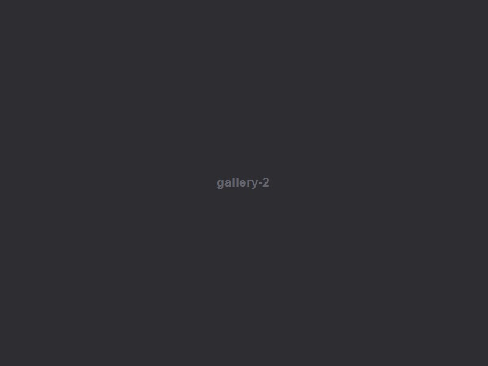
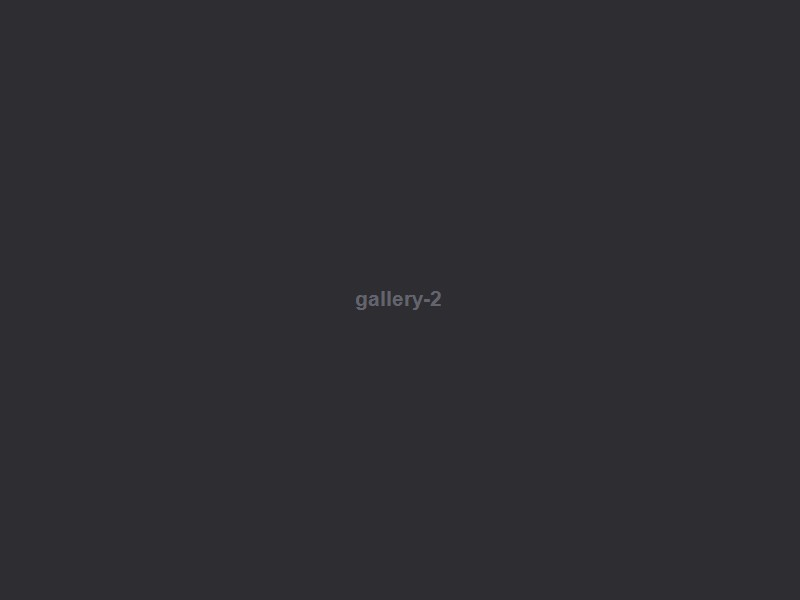

Philanthropic Agenda

Trag Foundation published the Philanthropic Agenda, the first document of its kind to provide an overview of the key regulatory areas that need to be improved. This comprehensive publication required thoughtful editorial design to present complex policy information in an accessible and visually engaging format.
The Challenge
The Philanthropic Agenda contained dense regulatory and policy content that needed to be presented in a way that was both authoritative and readable. The challenge was to create a design system that could handle complex data, charts, and lengthy text while maintaining visual interest throughout the 100+ page document.
 

The Solution
We designed a clean editorial system with a strong typographic hierarchy, strategic use of color coding for different regulatory areas, and custom infographics to visualize complex data. Pull quotes and sidebar elements break up the text, while a consistent grid system ensures readability across all sections.